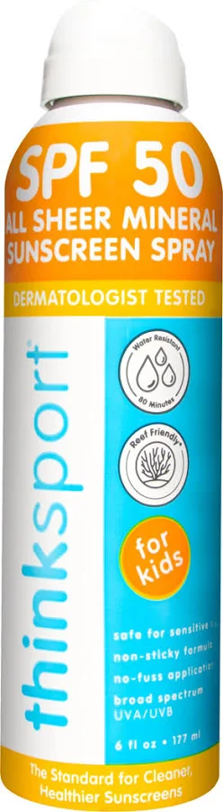

Complete Pool Safety Checklist for Parents
Drowning prevention isn't about one solutionit's about layers of protection working together. This checklist covers physical barriers, supervision rules, equipment, and emergency preparation. Print it, post it, and use it to protect your family.
Physical Barriers Checklist
Fences, gates, alarms, and covers create multiple layers of protection. A single barrier can failthese work together to prevent unsupervised pool access.
Four-sided pool fence (min 4ft tall)
An isolation fence that completely surrounds the pool, separate from your property fence. Vertical bars should be no more than 4 inches apart. This is the single most effective barrier.
Self-closing, self-latching gate
Gates must close and latch automatically. The latch should be out of reach of young children (54 inches high or higher). Test the gate weekly to ensure it works properly.
Door and window alarms
Install alarms on all doors and windows with pool access. Battery-powered alarms work when power is out. Test monthly and replace batteries twice a year.
Window locks and guards
Keep windows near the pool locked when not in use. Consider window guards or safety film to prevent children from opening or breaking them.
Pool safety cover (ASTM approved)
Use a safety cover that meets ASTM F1346 standards when the pool is not in use. Covers should support the weight of a child and be locked in place. Solar covers do NOT meet safety standards.
Pool alarm (surface or subsurface)
Install a pool alarm that detects water surface disturbance or subsurface waves. Use alongside fencing, not as a replacement. Check batteries monthly.
Supervision Rules Checklist
Active supervision is the most important drowning prevention tool. Children can drown silently in less than 60 secondsthere is no substitute for watching.
Designated water watcher
One adult is assigned as the water watcher with no other responsibilities. Rotate every 15-30 minutes to maintain alertness. No phones, no reading, no conversations.
No phone rule
Water watchers must put their phones away. Drowning is silentif you're looking at your phone, you won't see it happen. Consider using a "water watcher" lanyard or card to clarify the role.
No alcohol during supervision
Adults supervising children in or near water should never drink alcohol. Impaired judgment and delayed reaction time can be fatal.
Touch supervision (within arm's reach)
Stay within arm's reach of children under 5 at all times, even if they can swim or are wearing a life jacket. Young children lack the judgment to recognize danger.
Buddy system
Children over 5 should use the buddy system. Each swimmer is responsible for their buddy. Count swimmers every few minutes to ensure no one is missing.
Swim only when adults are present
Establish a household rule: no swimming without an adult present. Enforce it consistently. Teens and strong swimmers should still never swim alone.
Equipment & Emergency Preparation Checklist
When seconds count, the right equipment and training can save a life. Every pool-owning family should have these items and skills ready.
Rescue ring or reaching pole
Keep a U.S. Coast Guard-approved rescue ring or shepherd's hook (reaching pole) within 10 feet of the pool. Never enter the water to save someone unless you're trained.
Phone nearby (poolside)
Keep a cordless phone or cell phone at the pool (not on your personon a table or hook). You need to call 911 immediately while rescue efforts are underway.
Posted CPR instructions
Laminate CPR steps and post them near the pool. In an emergency, even trained rescuers can forget steps. A visual reminder saves critical seconds.
First aid kit (waterproof)
Keep a waterproof first aid kit poolside with bandages, antibiotic ointment, gauze, and a CPR face shield. Check and restock it annually.
Coast Guard approved life jackets
Use U.S. Coast Guard-approved life jackets for weak swimmers and children under 50 lbs. Never use inflatable arm floaties or pool toys as flotation devicesthey are not safety equipment.
CPR certification (all adults)
Every adult in the household should be CPR and First Aid certified. Drowning victims need CPR within 4-6 minutes to survive. Find a class at our directory or through the Red Cross.
Printable Checklist
Print this page (Ctrl+P or Cmd+P) or save it as a PDF to keep a physical copy near your pool or in your home binder.
- Share with caregivers: Give a copy to babysitters, grandparents, and anyone supervising your children near water.
- Review seasonally: At the start of swim season, review this checklist and test all alarms, gates, and equipment.
- Update as needed: As children grow, some rules change (e.g., touch supervision may evolve to visual supervision for older kids).
- Post CPR steps: In addition to this checklist, post laminated CPR instructions near the pool.
Pool Safety Products
Essential safety equipment to protect your family. These products provide layers of protection that work together.

Pool Door Alarm
Loud alarm sounds when doors are opened. Battery-powered, easy to install, and works during power outages.
View on Amazon
Removable Pool Fence (4ft)
Mesh safety fence with self-closing gate. Meets ASTM standards and can be removed when not needed.
View on Amazon
Kids Life Jacket (USCG Approved)
U.S. Coast Guard approved Type II life jacket. Designed to turn unconscious wearers face-up in the water.
View on Amazon
Pool Alarm (Floating)
Detects surface waves and sounds a loud alarm. Battery-powered with adjustable sensitivity.
View on Amazon
Pool Safety Hook / Reaching Pole
Telescoping pole extends up to 16 feet. Keep poolside for quick water rescue without entering the pool.
View on Amazon
Outdoor First Aid Kit (Waterproof)
Comprehensive kit with CPR face shield, bandages, antiseptic, and emergency instructions. Waterproof case.
View on AmazonFrequently Asked Questions
What kind of fence do I need around my pool?
A pool fence should be at least 4 feet tall with a self-closing, self-latching gate. The fence should completely surround the pool (four-sided isolation fence) and have vertical bars spaced no more than 4 inches apart to prevent children from squeezing through.
Are pool alarms worth it?
Yes. Pool alarms provide an additional layer of protection by alerting you if someone enters the pool area or if the water surface is disturbed. They should be used alongside fencing and supervision, not as a replacement for them.
What is a water watcher?
A water watcher is a designated adult whose sole responsibility is to actively supervise swimmers without distractions like phones or books. This role should rotate every 15-30 minutes to maintain alertness, and the water watcher should stay within arm's reach of children under 5.
More Water Safety Resources
CPR Training Guide
Find CPR and First Aid classes near you. Learn the steps that can save a life in under 6 minutes.
Water Safety Resources
Guides, data, and tools for parents, caregivers, and communities working to prevent drowning.
Find Swim Lessons
Search 1,245+ swim lesson providers across all 50 states. Free and low-cost options available.
FloatSwim is a participant in the Amazon Associates Program. Some links earn a small commission at no extra cost to you.